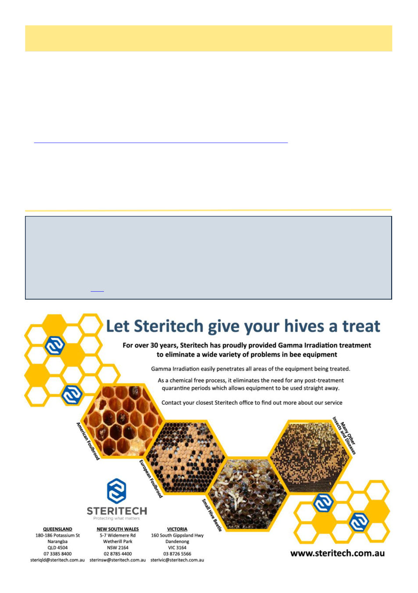

April 2026
11
New Scientist
Ancient pots found near Pompeii contain 2500-year-old honey
The contents of an ancient Greek pot found in a shrine near Pompeii are testament to the longevity of a jar of honey.
In 1954, a Greek burial shrine dating to around 520 BC was discovered in Paestum, Italy, about 70 kilometres south
of Pompeii. There were eight pots in the shrine containing a sticky residue, whose identity has been a mystery ever
since their discovery… Further analysis by Elisabete Pires, at the University of Oxford, revealed the presence of
proteins called major royal jelly proteins, which are secreted by honeybees, as well as some peptides whose closest
match was from Tropilaelaps mercedesae, a parasitic mite that feeds on the larvae of honeybees.
Read the full article here
Winter Bees, cont’d
4. Amdam, G.V., Hartfelder, K., Norberg, K., Hagen, A. and Omholt, S.W., 2004. Altered physiology in worker hon-
ey bees (Hymenoptera: Apidae) infested with the mite Varroa destructor (Acari: Varroidae): a factor in colony loss
during overwintering?. Journal of economic entomology, 97(3), pp.741-747.
5. Van Dooremalen, C., Gerritsen, L., Cornelissen, B., van der Steen, J.J., van Langevelde, F. and Blacquiere, T.,
2012. Winter survival of individual honey bees and honey bee colonies depends on level of Varroa destructor in-
festation. PloS one, 7(4), p.e36285.
6. https://agrifutures.com.au/product/varroa-destructor-research-strategy-2024-2027/
7. Giacobino, A., Molineri, A., Cagnolo, N.B., Merke, J., Orellano, E., Bertozzi, E., Masciángelo, G., Pietronave, H.,
Pacini, A., Salto, C. and Signorini, M., 2015. Risk factors associated with failures of Varroa treatments in honey
bee colonies without broodless period. Apidologie, 46(5), pp.573-582.
8. Wilkinson, D. and Smith, G.C., 2002. A model of the mite parasite, Varroa destructor, on honeybees (Apis mellif-
era) to investigate parameters important to mite population growth. Ecological Modelling, 148(3), pp.263-275.
(Continued from page 10)